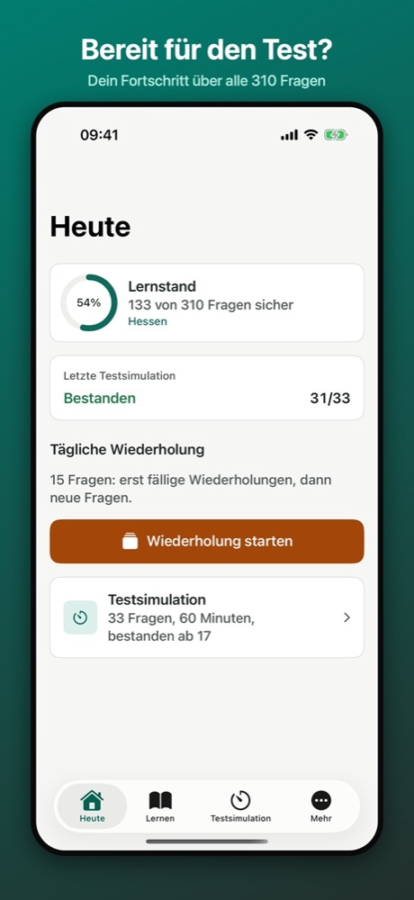
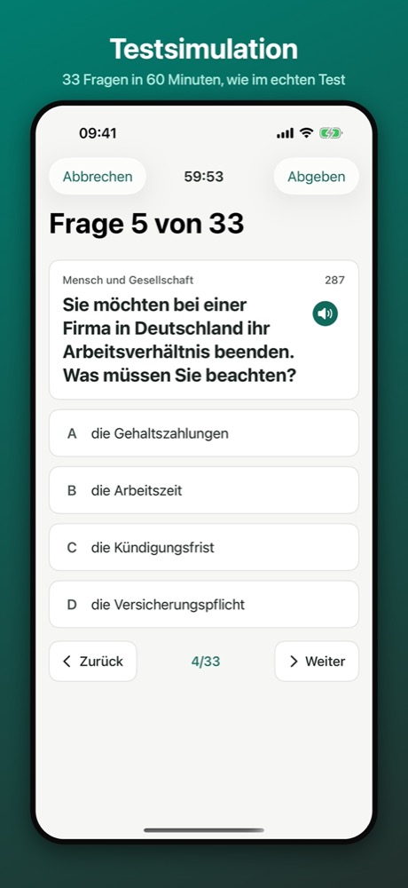
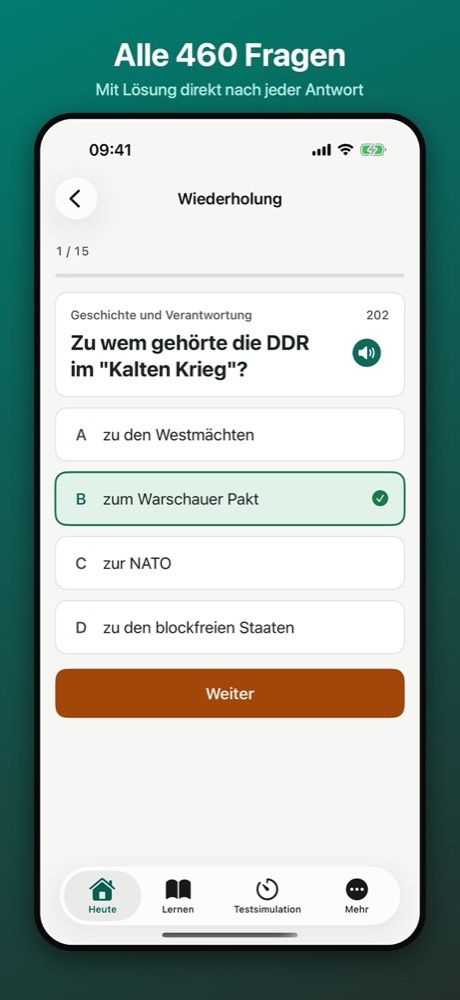
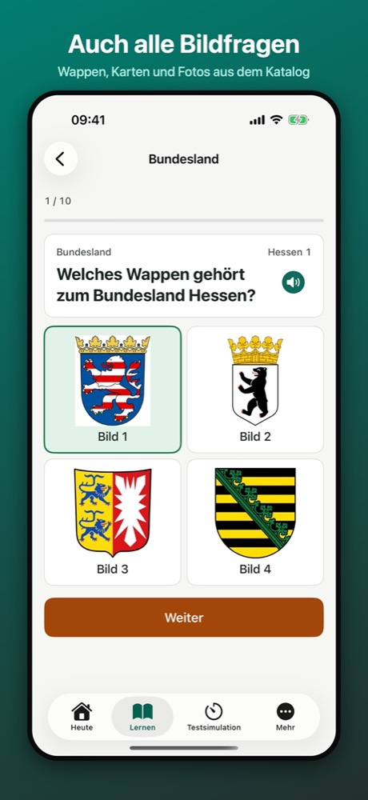
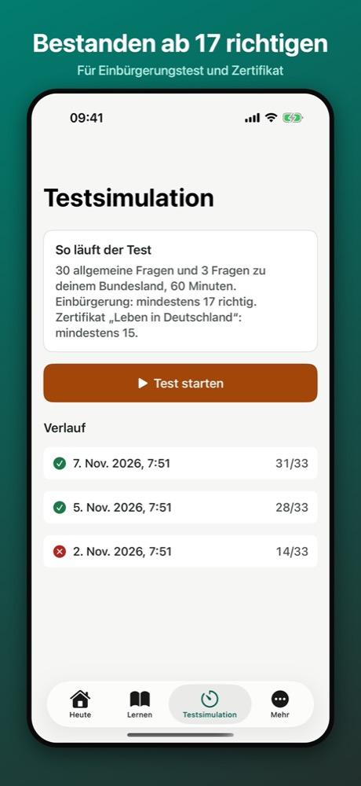
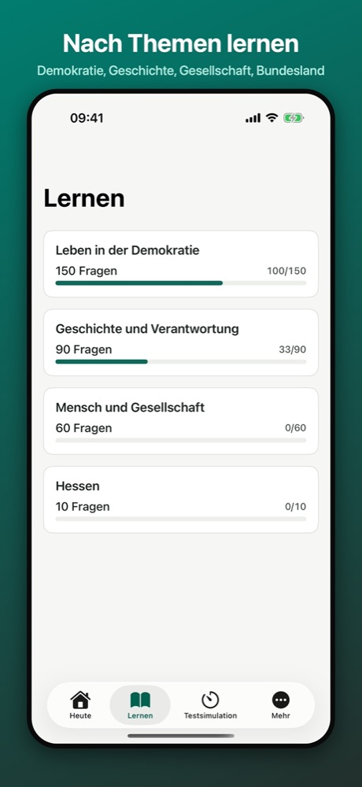

LiD Trainer
Einbürgerungstest & Leben in Deutschland · Deutsch / Türkçe / العربية






LiD Trainer ist eine unabhängige Lern-App. Sie wird nicht vom Bundesamt für Migration und Flüchtlinge (BAMF) oder einer anderen Behörde herausgegeben. Die Fragen stammen aus dem öffentlich veröffentlichten Gesamtfragenkatalog.
Alle 460 Fragen (Stand 07.05.2025) mit allen Bildfragen, eine Testsimulation mit 33 Fragen in 60 Minuten und auf Wunsch eine Übersetzung ins Türkische und Arabische.
- Tägliche Wiederholung: falsch beantwortete Fragen kommen öfter
- Lernen nach Themen und für dein Bundesland
- Fehlertraining und Vorlesefunktion
- Offline, ohne Konto; dein Fortschritt bleibt auf deinem Gerät
Kostenlos mit Werbung. LiD Trainer Pro ist ein Einmalkauf ohne Abo: unbegrenzte Testsimulationen und keine Werbung.
460 sorunun tamamı, 60 dakikalık 33 soruluk sınav provası ve her sorunun altında isteğe bağlı Türkçe çeviri. Sınavın kendisi Almancadır; çeviriler resmî değildir.
LiD Trainer bağımsız bir uygulamadır; BAMF ya da başka bir kurumla bağlantısı yoktur.
جميع الأسئلة الـ 460، واختبار تجريبي من 33 سؤالًا في 60 دقيقة، وترجمة عربية اختيارية تحت كل سؤال. الاختبار نفسه باللغة الألمانية، والترجمات غير رسمية.
LiD Trainer تطبيق مستقل، ولا يصدر عن المكتب الاتحادي للهجرة واللاجئين (BAMF) أو أي جهة رسمية.
Support · Destek · الدعم · Datenschutz · Gizlilik · الخصوصية · Nutzungsbedingungen · Koşullar · الشروط